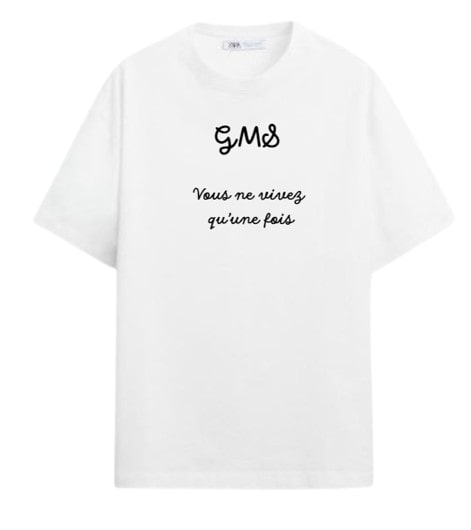
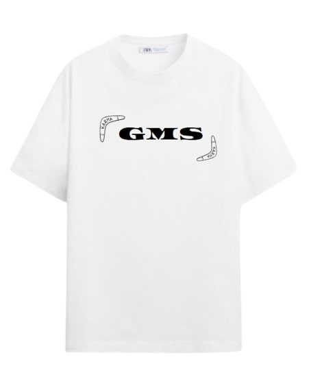
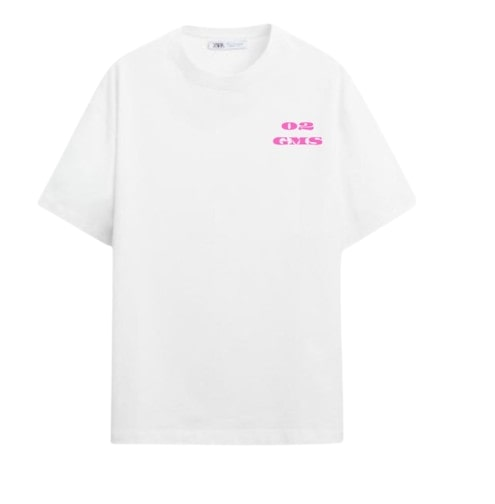
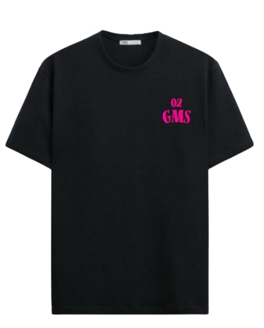

Ver Produto
T-shirt "C'est la vie"
Conforto e versatilidade para qualquer ocasião. Veste a tua atitude com estilo.
€19.99

T-shirt "No Pressure"
Elegância e modernidade no seu dia a dia. Perfeita para um look minimalista.
€21.99
T-shirt "Feelings"
Mais que um órgão, o coração é a casa dos sentimentos. Vista a sua emoção.
€18.50

Ver Produto
T-shirt "Karma"
Um design moderno com uma mensagem que o fará pensar. Vista o seu karma.
€22.50

Ver Produto
T-shirt "Nature"
Esta t-shirt celebra a natureza, com uma cerejeira em flor nas costas para que possa "respirar o ar mais puro".
€20.00

Ver Produto
T-shirt "Show Your Love"
"Show your love, Different from normal" - uma t-shirt com uma mensagem ousada e um design que se destaca.
€17.99
Porquê Escolher GMS?
Qualidade Superior
Peças feitas para durar, com os melhores materiais.
Entrega Rápida
Receba a sua encomenda em 24-48h úteis.
Suporte Dedicado
A nossa equipa está sempre pronta para ajudar.